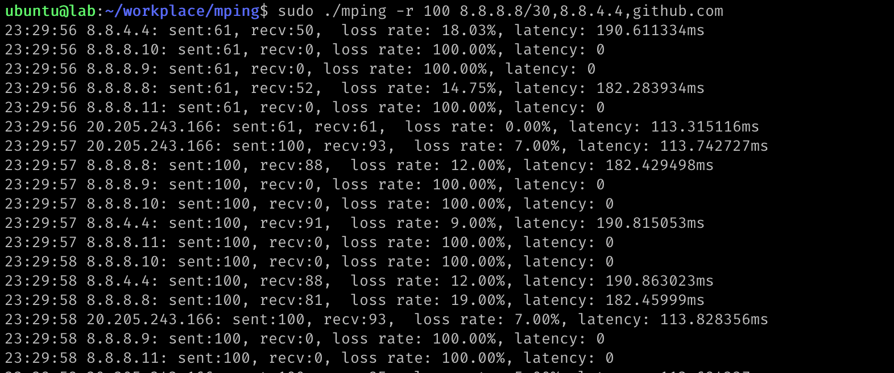

项目地址： mping
最近在网络探测的分析中，需要做一个使用ICMP协议进行压测的工具， ping或者fping多多少少都不满足需求，所以需要自己写一个。
使用golang.org/x/net/icmp很容易的实现基于ICMP的工具， go-ping就算了，既缺乏维护性能也不佳。所以我最初使用Go官方扩展库实现了这个工具，不过这几天我看到Matt Layher刚推出一个新的ICMP库：mdlayher/icmpx， 我决定尝试一下。Matt Layher 是Go网络编程的专家，写了好几个网络相关的库，所以我对他的库还是蛮有信心的。
而且我在使用这个库的过程中，给他提了一个需求，希望能增加设置TOS的功能，他当天就给加上了，少有的活跃和友善的开源作者。
这个库的使用也非常简单，ReadFrom用来读，WriteTo用来发， Close用来关闭， SetTOS是我提的一个需求，可以设置TOS值。
1 2 3 4 5 6
| type IPv4Conn func ListenIPv4(ifi *net.Interface, cfg IPv4Config) (*IPv4Conn, error) func (c *IPv4Conn) Close() error func (c *IPv4Conn) ReadFrom(ctx context.Context) (*icmp.Message, netip.Addr, error) func (c *IPv4Conn) SetTOS(tos int) error func (c *IPv4Conn) WriteTo(ctx context.Context, msg *icmp.Message, dst netip.Addr) error
|
当然它还有对应的IPv6版本，功能类似，我们就不介绍了，本文只介绍IPv4的功能。
先前我在我的网站和公众号发表过一篇文章使用Go实现ping工具,介绍了几种实现ping的方式，这一次，我使用另外一个方法，使用一个新的ICMP库，实现一个真正落地使用的工具。
我把这个工具的实现分为四个部分：
- 主程序： 程序的入口，主要解析各种参数
- 发送函数：发送ICMP数据
- 接收函数：接收ICMP回包
- 统计输出：输出每个周期的丢包率和时延
接下来我分别介绍。这个程序的代码在 mping
主程序入口
1 2 3 4 5 6 7 8 9
| var ( count = pflag.IntP("count", "c", 0, "count, 0 means non-setting") tos = pflag.IntP("tos", "z", 0, "tos, 0 means non-setting") packetSize = pflag.IntP("size", "s", 64, "packet size") timeout = pflag.DurationP("timeout", "t", time.Second, "timeout") rate = pflag.IntP("rate", "r", 100, "rate, 100 means 100 packets per second for each target") delay = pflag.IntP("delay", "d", 3, "delay seconds") bitflipCheck = pflag.BoolP("bitflip", "", false, "check bitflip") )
|
它包含几个参数，使用 github.com/spf13/pflag进行解析。之所以不使用标准库的flag解析， 是因为pflag更强大，支持短参数和长参数，支持将参数放在最后面，更符合Linux ping/traceroute的参数样式。
- count: 你可以持续进行探测，也可以使用
-c指定发多少包后退出。
- tos: 可以指定网络的优先级，针对不同的优先级进行探测和压测。
- size: 指定包的大小。这里的包大小其实指的是payload, 不包含ICMP、IP以及以上的包头
- timeout: 指定发送数据的超时时间
- rate: 发包的频率， 也就是 pps (packet/second)
- delay: 最大延迟时间，超过这个时间的包就丢弃了
- bitflip: 检查经过的物理链路中是否有改包的行为。 芯片的老化、bug、或者电磁辐射等等有可能把链路中的一个或者几个比特位进行修改，网络和服务器可能能通过CRC检查到，但是由于CRC的缺陷也可能检查不到，导致落盘的数据是错误的。从业屙屎多年来我也经历过几起。
这是参数的设置，也你也可以把它当做一个需求，想一想程序该怎么实现。
这个程序还需要一个参数，也就是要探测的目的地址。
mping支持同时探测多个目的地址。目的地址可以是域名，也可以是网段，比如:
1
| sudo ./mping -r 100 8.8.8.8/30,8.8.4.4,github.com
|
因为我们使用了底层的socket编程方式，所以需要 root 用户才能执行这个程序， 或者 root用户使用 setcap cap_net_raw=+ep ./mping 设置权限后， 普通用户也能执行。
具体的参数检查和处理我就不赘述了，比较简单，大家可以看项目中的源代码。总是我们会把目的地址拆解成一组具体的 IP地址，放在变量targetAddrs []string中。
接下来我们看看是怎么收发包的。
发包
因为icmpx这个包它要求传入一个网络接口，这是有点讨厌的地方，我们不得不使用qianmo库获得一个网络接口。这例其实是有点小缺陷的，如果你所在的探测服务器有多个IP地址，每个地址有不同的路由，这里找到的网络接口可能不是你想要的。更好的解决办法根据目的地址，找到本地对应的IP和网络接口。但是如果目的地址有多个，使用不同的网络接口的话，处理起来有很麻烦，所以这里我们从简处理了。
找到网络接口后就可以创建 icmpx.IPv4Conn对象了，创建好后我们可以设置TOS值，本文就省略了：
1 2 3 4 5 6 7 8 9 10 11 12 13 14 15 16 17 18 19 20
| addrs := qianmo.NonLoopbackAddrs() if len(addrs) == 0 { return errors.New("no non-loopback address") } iface, err := qianmo.InterfaceByIP(addrs[0]) if err != nil { return fmt.Errorf("failed to get interface by ip: %w", err) } conn, err := icmpx.ListenIPv4(iface, icmpx.IPv4Config{ Filter: icmpx.IPv4AllowOnly(ipv4.ICMPTypeEchoReply), }) ... go send(conn) go printStat() return read(conn)
|
这个icmpx.IPv4Conn我们既用它发包，也用来收包。
注意在创建IPv4Conn的时候我们增加了一个filter,我们只接收ipv4.ICMPTypeEchoReply回包。 在网络环境中，服务器总是有一些ICMP包的干扰，通过这个filter,我们可以筛选出我们所关注的ICMP包。
最主要的发送逻辑如下:
1 2 3 4 5 6 7 8 9 10 11 12 13 14 15 16 17 18 19 20 21 22 23 24 25 26 27 28 29 30 31 32 33 34 35 36 37 38 39 40 41 42 43 44 45 46
| func send(conn *icmpx.IPv4Conn) { defer connOnce.Do(func() { conn.Close() }) limiter := ratelimit.New(*rate, ratelimit.Per(time.Second)) ...... sentPackets := 0 for { seq++ ts := time.Now().UnixNano() binary.LittleEndian.PutUint64(data[len(msgPrefix):], uint64(ts)) req := &icmp.Message{ Type: ipv4.ICMPTypeEcho, Body: &icmp.Echo{ ID: int(id), Seq: int(seq), Data: data, }, } limiter.Take() for _, target := range targetAddrs { key := ts / int64(time.Second) stat.Add(key, &Result{ ts: ts, target: target, seq: seq, }) ctx, cancel := context.WithTimeout(context.Background(), *timeout) err := conn.WriteTo(ctx, req, netip.MustParseAddr(target)) cancel() if err != nil { return } } ...... } }
|
这里有几个技巧：
- 包payload我们加了前缀
smallnest, 以便检查回包是否合法
- ICMP Echo包中的id 一般我们设置为程序的进程号
- ICMP Echo包中的seq我们递增，收到回包后我们可以把回包和发送的包做匹配
- 使用限流器控制发送的速率
- 发送的payload加上了发送的时间戳，收到回包后可以计算时延(latency)
- 发送的payload使用随机数据填充，收到包后检查数据，看看有没有改包行为
发送使用了一个goroutine。
接收
1 2 3 4 5 6 7 8 9 10 11 12 13 14 15 16 17 18 19 20 21 22 23 24 25 26 27 28 29 30 31 32 33 34 35 36 37 38 39 40 41 42 43 44 45
| func read(conn *icmpx.IPv4Conn) error { defer connOnce.Do(func() { conn.Close() }) for { ctx, cancel := context.WithTimeout(context.Background(), time.Second*time.Duration((*delay))) msg, addr, err := conn.ReadFrom(ctx) cancel() if err != nil { return nil } ...... switch pkt := msg.Body.(type) { case *icmp.Echo: if uint16(pkt.ID) != id { continue } if len(pkt.Data) < len(msgPrefix)+8 { continue } if !bytes.HasPrefix(pkt.Data, msgPrefix) { continue } ts := int64(binary.LittleEndian.Uint64(pkt.Data[len(msgPrefix):])) key := ts / int64(time.Second) bitflip := false if *bitflipCheck { bitflip = !bytes.Equal(pkt.Data[len(msgPrefix)+8:], payload) } stat.Add(key, &Result{ ts: ts, target: target, latency: time.Now().UnixNano() - ts, received: true, seq: uint16(pkt.Seq), bitflip: bitflip, }) } } }
|
接收也很检查，就是收到包后各种检查，确保收到的包和发送包是匹配的。
可以看到，我们使用icmpx这个库的时候，相对Go官方的icmp库，处理起来相对就简单了。
统计
最后一个部分就是统计了。我们收发包已经完成，那么我们希望每秒能在命令行中打印出每一秒的统计信息，包括发送了多少包，丢弃了多少包，丢包率是多少，时延是多少。
我们的统计方法是这样子的：
- 每个周期(1秒)的数据放入一个篮子中(Bucket)
- 每一秒检查前面 delay 秒的bucket,统计这个篮子内的发包丢包情况
- 篮子中的数据使用map对象保存， key是 target-seq, 收到的回包数据会覆盖发包数据，如果没有被覆盖，那么检查请求的包就知道丢包了
1 2 3 4 5 6 7 8 9 10 11 12 13 14 15 16 17 18 19 20 21 22 23 24 25 26 27 28 29 30 31 32 33 34 35 36 37 38 39 40 41 42 43 44 45 46 47 48 49 50
| func printStat() { delayInSeconds := int64(*delay) ticker := time.NewTicker(time.Second) var lastKey int64 for range ticker.C { if bucket.Key <= time.Now().UnixNano()/int64(time.Second)-delayInSeconds { pop := stat.Pop().(*Bucket) ...... targetResult := make(map[string]*TargetResult) for _, r := range pop.Value { target := r.target tr := targetResult[target] if tr == nil { tr = &TargetResult{} targetResult[target] = tr } tr.latency += r.latency if r.received { tr.received++ } else { tr.loss++ } if *bitflipCheck && r.bitflip { tr.bitflipCount++ } } for target, tr := range targetResult { ...... if *bitflipCheck { ...... log.Printf("%s: sent:%d, recv:%d, loss rate: %.2f%%, latency: %v, bitflip: %d\n", target, total, tr.received, lossRate*100, time.Duration(tr.latency/int64(tr.received)), tr.bitflipCount) } else { ...... } } } } }
|
这样，我们的mping工具就开发完成了，看看它的功能吧：
